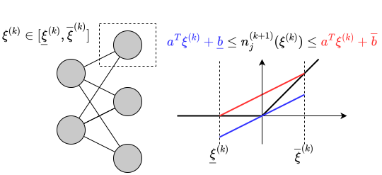
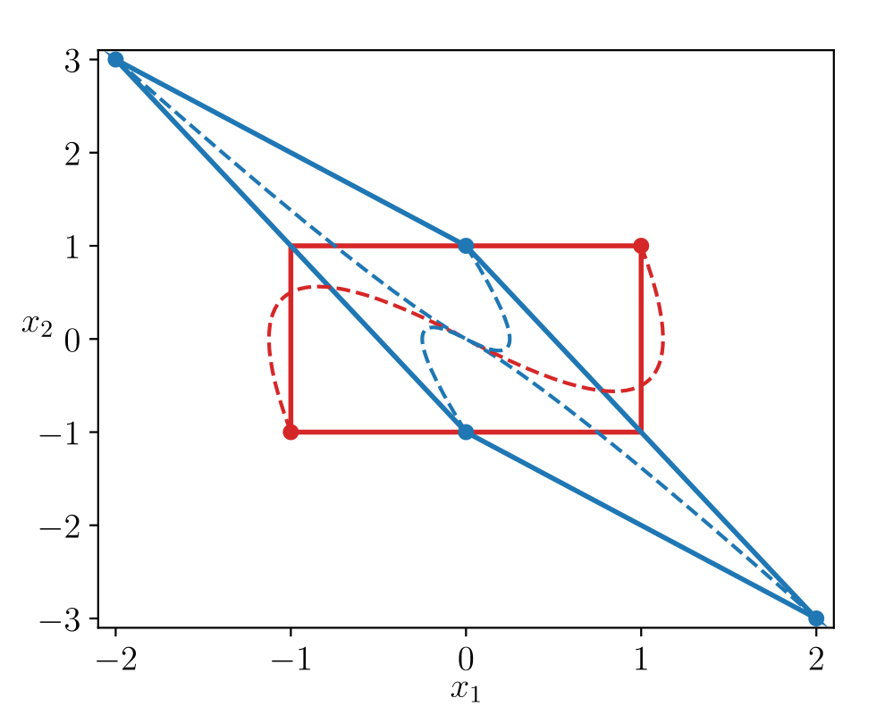
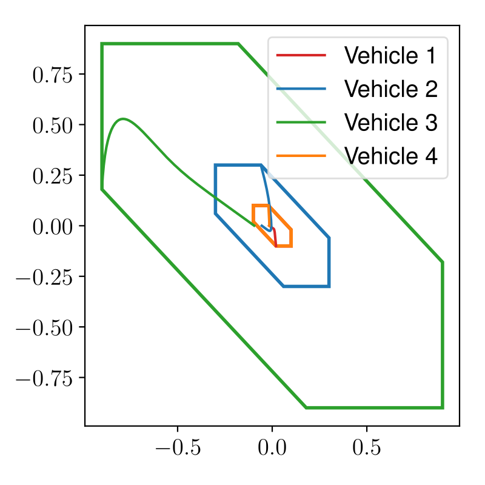

Forward Invariance in Neural Network Controlled Systems
ACC 2024
\(^\dagger\)School of Electrical and Computer Engineering, Georgia Institute of Technology
\(^*\)Department of Electrical, Computer, and Energy Engineering, University of Colorado, Boulder
July 11, 2024
Acknowledgements
Saber Jafarpour
saberjafarpour.github.io
Advisor: Samuel Coogan
coogan.ece.gatech.edu
Motivation
Safety of Neural Network Controlled Feedback Systems
- Efficiently and scalably certify neural network controlled systems
- Simple enough to train neural network controllers with safety guarantees
Reachability
Given a set of possible initial states \(\mathcal{X}\) and possible disturbances \(\mathcal{W}\), show that the set of all possible states \(\mathcal{R}(t,\mathcal{X},\mathcal{W})\) does not hit unsafe states \(\mathcal{A}\) while reaching goal states \(\mathcal{G}\).
Invariance
Show that a set of possible states \(\mathcal{X}\) is \(\mathcal{W}\)-robustly forward invariant, i.e., trajectories starting in \(\mathcal{X}\) remain in \(\mathcal{X}\) for all future time.
Certifying Robust Forward Invariant Sets
Definition (Robust forward invariant set)
The set \(\mathcal{X}\) is \(\mathcal{W}\)-robustly forward invariant for the system \(\dot{x} = f(x,\pi(x),w)\) if every trajectory starting in \(\mathcal{X}\) with disturbances \(w(t)\in\mathcal{W}\) remains in \(\mathcal{X}\), \[ \left\{ \begin{aligned} x_0 &\in \mathcal{X}\\ w(t) &\in \mathcal{W}\quad \forall t\geq 0 \end{aligned} \right. \implies \begin{aligned} x(t) \in\mathcal{X}. \end{aligned} \]
Certifying Robust Forward Invariant Sets
Definition (Robust forward invariant set)
The set \(\mathcal{X}\) is \(\mathcal{W}\)-robustly forward invariant for the system \(\dot{x} = f(x,\pi(x),w)\) if every trajectory starting in \(\mathcal{X}\) with disturbances \(w(t)\in\mathcal{W}\) remains in \(\mathcal{X}\), \[ \left\{ \begin{aligned} x_0 &\in \mathcal{X}\\ w(t) &\in \mathcal{W}\quad \forall t\geq 0 \end{aligned} \right. \implies \begin{aligned} x(t) \in\mathcal{X}. \end{aligned} \]
Our Approach:
- Interval analysis for general nonlinear systems analysis
- Robust invariance without sampling, retains scalability in number of states
- Invariant polytopes for mechanical systems
- Implementable in the training loop for general polytopes
Interaction-Aware Interval Analysis of Neural Network Feedback Loops
Inclusion Functions
Definition (Inclusion Function)
Given a map \(f:\mathbb{R}^n\to\mathbb{R}^m\), the map \(\mathsf{F}=[\underline{\mathsf{F}},\overline{\mathsf{F}}]\) is an inclusion function [4] for \(f\) if \[\begin{align*} \underline{\mathsf{F}}(\underline{x},\overline{x}) \leq f(x) \leq \overline{\mathsf{F}}(\underline{x},\overline{x}), \end{align*}\] for every \(x\in[\underline{x},\overline{x}]\).
Definition (Interval)
An interval \([\underline{x},\overline{x}]\subset\mathbb{R}^n\) is defined as the closed and bounded set \[ \begin{align*} \{x\in\mathbb{R}^n : \underline{x}\leq x\leq \overline{x}\}, \end{align*} \] where \(\leq\) is element-wise.

Minimal Inclusion Function
Definition (Minimal Inclusion Function)
Given \(f:\mathbb{R}^n\to\mathbb{R}^m\), \(\mathsf{F}\) defined by \[ \underline{\mathsf{F}}_i(\underline{x},\overline{x}) = \inf_{x\in[\underline{x},\overline{x}]} f_i(x), \ \overline{\mathsf{F}}_i(\underline{x},\overline{x}) = \sup_{x\in[\underline{x},\overline{x}]} f_i(x), \] is called the minimal inclusion function of \(f\).
Example (Arithmetic)
\[ \begin{align*} &[\underline{a},\overline{a}] + [\underline{b},\overline{b}] = [\underline{a}+ \underline{b}, \overline{a}+ \overline{b}] \\ &[\underline{a},\overline{a}]\cdot[\underline{b},\overline{b}] := [\min \{\underline{a}\underline{b},\underline{a}\overline{b},\overline{a}\underline{b},\overline{a}\overline{b}\}, \\ & \quad \max\{\underline{a}\underline{b},\underline{a}\overline{b},\overline{a}\underline{b},\overline{a}\overline{b}\} \end{align*} \]
- Can define for primitive functions like \(\sin\), \(\exp\), \(x^n\), \(1/x\)
- Generally computationally intractable
Example (Monotone)
Let \(f\) be monotone wrt \(\leq\). \[ \begin{align*} \underline{\mathsf{F}}_i(\underline{x},\overline{x}) &= \min\{f_i(\underline{x}),f_i(\overline{x})\}, \\ \overline{\mathsf{F}}_i(\underline{x},\overline{x}) &= \max\{f_i(\underline{x}),f_i(\overline{x})\}. \end{align*} \]
Example (Continuous)
\(\mathcal{S}= \{\text{critical points}\}\cap[\underline{x},\overline{x}]\) \[ \begin{align*} \underline{\mathsf{F}}_i(\underline{x},\overline{x}) &= \min_{x\in \mathcal{S}\cup \{\underline{x},\overline{x}\}} f_i(x), \\ \overline{\mathsf{F}}_i(\underline{x},\overline{x}) &= \max_{x\in \mathcal{S}\cup \{\underline{x},\overline{x}\}} f_i(x). \end{align*} \]
Automatic Inclusion Functions Using npinterval
Definition (Natural Inclusion Function)
Let \(f = f_1 \circ \cdots \circ f_\ell\) be a composition of functions/operators \(f_i\) with inclusion functions \(\mathsf{F}_i\). \[\begin{align*} \mathsf{F}(\underline{x},\overline{x}) = (\mathsf{F}_1\circ \mathsf{F}_2\circ\cdots\circ \mathsf{F}_\ell)(\underline{x},\overline{x}), \end{align*}\] is a natural inclusion function of \(f\).
Example
Let \(f(x) = \sin(x^2)\), \(\textsf{SIN}\), \(\textsf{POW}_2\) be the minimal inclusion functions of \(\sin(x)\), \(x^2\). \[ \begin{align*} \mathsf{F}(\underline{x},\overline{x}) = \textsf{SIN}(\textsf{POW}_2(\underline{x},\overline{x})) \end{align*} \] is an inclusion function for \(f\).
npinterval[5] addsintervaldtype + compiled natural incl. fun
Jacobian-based Inclusion Function
Definition (Jacobian-Based Inclusion Function)
Let \(f:\mathbb{R}^n\to\mathbb{R}^m\) be differentiable, with inclusion function \(\mathsf{J}\) for its Jacobian as \(\frac{\partial f}{\partial x}(x) \in \mathsf{J}(\underline{x},\overline{x})\) for every \(x\in[\underline{x},\overline{x}]\). Let \({\mathring{x}}\in[\underline{x},\overline{x}]\).
- \(f(x)\in [\mathsf{J}(\underline{x},\overline{x})](x - {\mathring{x}}) + f({\mathring{x}})\), and
- \(\mathsf{F}(\underline{x},\overline{x}) = [\mathsf{J}(\underline{x},\overline{x})]([\underline{x},\overline{x}] - {\mathring{x}}) + f({\mathring{x}})\)
is a Jacobian-based inclusion function of \(f\).
- \({\mathring{x}}\) location matters
- For invariance, we choose \({\mathring{x}}\) at an equilibrium
- Automated with
sympy+npinterval
Local Affine Bounds of Neural Network
Local Affine Bounds of Neural Network
An algorithm returns \((C_{[\underline{x},\overline{x}]},\underline{d}_{[\underline{x},\overline{x}]},\overline{d}_{[\underline{x},\overline{x}]})\), where for \(x\in[\underline{x},\overline{x}]\), \[ C_{[\underline{x},\overline{x}]}x + \underline{d}\leq \pi(x) \leq C_{[\underline{x},\overline{x}]}x + \overline{d}. \]

- Many off-the-shelf neural network verifiers efficiently return these bounds, e.g., CROWN [6]
- Our method also works with the bounds \((\underline{C}_{[\underline{x},\overline{x}]},\overline{C}_{[\underline{x},\overline{x}]},\underline{d}_{[\underline{x},\overline{x}]},\overline{d}_{[\underline{x},\overline{x}]})\), \[ \underline{C}_{[\underline{x},\overline{x}]}x + \underline{d}\leq \pi(x) \leq \overline{C}_{[\underline{x},\overline{x}]}x + \overline{d}. \]
First-Order Neural Network Inclusion Function
Local Affine Bounds of Neural Network
Algorithm returns \((C_{[\underline{x},\overline{x}]},\underline{d}_{[\underline{x},\overline{x}]},\overline{d}_{[\underline{x},\overline{x}]})\), where for \(x\in[\underline{x},\overline{x}]\), \[ C_{[\underline{x},\overline{x}]}x + \underline{d}\leq \pi(x) \leq C_{[\underline{x},\overline{x}]}x + \overline{d}. \]
Interaction-Aware Jacobian-based Inclusion Function [7]
\[\begin{align*} f(x,u,w) \in &\ [\mathsf{J}_x](x - {\mathring{x}}) + [\mathsf{J}_u](u - {\mathring{u}}) + [\mathsf{J}_w] (w - {\mathring{w}}) + f({\mathring{x}},{\mathring{u}},{\mathring{w}}), \\ f(x,\pi(x),w) % \in &\ [\sfJ_x] x + [\sfJ_u](C_{[\ulx,\olx]}x + [\uld_{[\ulx,\olx]},\old_{[\ulx,\olx]}]) + [\sfR_{[\ulx,\olx]}(\ulw,\olw)], \\ \in &\ (\underbrace{[\mathsf{J}_x] + [\mathsf{J}_u]C_{[\underline{x},\overline{x}]}}_{\text{First-order Interactions}})x + \underbrace{[\mathsf{J}_u][\underline{d}_{[\underline{x},\overline{x}]},\overline{d}_{[\underline{x},\overline{x}]}] + [\mathsf{R}_{[\underline{x},\overline{x}]}(\underline{w},\overline{w})]}_{\text{Remainder Terms}}, \\ \in &\ \underbrace{([\mathsf{J}_x] + [\mathsf{J}_u]C_{[\underline{x},\overline{x}]})[\underline{x},\overline{x}] + [\mathsf{J}_u][\underline{d}_{[\underline{x},\overline{x}]},\overline{d}_{[\underline{x},\overline{x}]}] + [\mathsf{R}_{[\underline{x},\overline{x}]}(\underline{w},\overline{w})]}_{=:\mathsf{F}(\underline{x},\overline{x},\underline{w},\overline{w})}. \end{align*}\]
Forward Invariance via the Embedding System
The Embedding System
Definition (Embedding System)
Given the closed-loop system \(\dot{x} = f(x,\pi(x),w)\), the inclusion function \(\mathsf{F}\) induces the embedding system \[ \begin{aligned} \dot{\underline{x}}_i = \big(\underline{\mathsf{E}}(\underline{x},\overline{x},\underline{w},\overline{w})\big)_i := \big(\underline{\mathsf{F}}(\underline{x},\overline{x}_{i:\underline{x}},\underline{w},\overline{w})\big)_i,\\ \dot{\overline{x}}_i = \big(\overline{\mathsf{E}}(\underline{x},\overline{x},\underline{w},\overline{w})\big)_i := \big(\overline{\mathsf{F}}(\underline{x}_{i:\overline{x}},\overline{x},\underline{w},\overline{w})\big)_i. \end{aligned} \]
- Notation: \((x_{i:y})_j = x_j\) if \(j\neq i\) and \(y_i\) if \(j=i\).
- \(2n\)-dimensional monotone dynamical system that “contains” the original system
- Evaluates inclusion function separately on each face of the interval \([\underline{x},\overline{x}]\).
The Embedding System
Forward Invariance in Hyper-Rectangles
Proposition (Forward invariance in hyper-rectangles)
If \(\underline{\mathsf{E}}(\underline{x},\overline{x},\underline{w},\overline{w}) \geq 0\) and \(\overline{\mathsf{E}}(\underline{x},\overline{x},\underline{w},\overline{w}) \leq 0\), i.e., \[ \mathsf{E}(\underline{x},\overline{x},\underline{w},\overline{w}) \geq_{\mathrm{SE}}0, \] then \([\underline{x},\overline{x}]\) is \([\underline{w},\overline{w}]\)-robustly forward invariant for the original system.
Understanding the Invariance Condition
\[ \mathsf{E}(\underline{x},\overline{x},\underline{w},\overline{w}) \geq_{\mathrm{SE}}0 \] \([\underline{x},\overline{x}]\) is \([\underline{w},\overline{w}]\)-robustly forward invariant.
Nested Forward Invariance
Theorem (A nested family of invariant sets)
Let \(t\mapsto\left[\begin{smallmatrix} \underline{x}(t) \\ \overline{x}(t) \end{smallmatrix}\right]\) be the trajectory of the embedding system from \(\left[\begin{smallmatrix} \underline{x}_0 \\ \overline{x}_0 \end{smallmatrix}\right]\). If \(\mathsf{E}(\underline{x}_0,\overline{x}_0,\underline{w},\overline{w}) \geq_{\mathrm{SE}}0\), then
- For every \(\tau \geq t\geq 0\), \([\underline{x}(t), \overline{x}(t)]\) is \([\underline{w},\overline{w}]\)-robustly forward invariant and \([\underline{x}(\tau),\overline{x}(\tau)]\subseteq [\underline{x}(t),\overline{x}(t)]\);
- \(\lim_{t\to\infty}\left[\begin{smallmatrix} \underline{x}(t) \\ \overline{x}(t) \end{smallmatrix}\right] = \left[\begin{smallmatrix} \underline{x}^\star \\ \overline{x}^\star \end{smallmatrix}\right]\), \(\mathsf{E}(\underline{x}^\star,\overline{x}^\star,\underline{w},\overline{w}) = 0\), and \([\underline{x},\overline{x}]\) is a \([\underline{w},\overline{w}]\)-attracting set with ROA \([\underline{x}_0,\overline{x}_0]\).
- Theorem follows by the monotonicity of the embedding system dynamics with respect to the southeast order \(\leq_{\mathrm{SE}}\).
Understanding the Nested Property
\[ \begin{bmatrix} \underline{x}(t) \\ \overline{x}(t) \end{bmatrix} \to \begin{bmatrix} \underline{x}^\star \\ \overline{x}^\star \end{bmatrix} \] \([\underline{x}^\star,\overline{x}^\star]\) is \([\underline{w},\overline{w}]\)-attracting with ROA \([\underline{x}_0,\overline{x}_0]\).
Intervals are Sometimes Impossible
Example (Mechanical System)
Consider the system \[ \begin{aligned} \dot{x}_1 = x_2, \quad \dot{x}_2 = u \end{aligned} \] with \(u = \pi(x) = -2x_1 - 3x_2\). Interval invariant sets are impossible in \(x\). With \(T = \left[\begin{smallmatrix} 1 & 1 \\ -1 & -2 \end{smallmatrix}\right]\), \(y = Tx\), \[ \dot{y} = \left[\begin{smallmatrix} -1 & 0 \\ 0 & -2 \end{smallmatrix}\right]y. \] \([-0.5,0.5]^2\) is forward invariant in \(y\). Thus, \[ \{T^{-1}y : y\in [-0.5,0.5]^2\} \] is forward invariant in \(x\).

Forward Invariance in Polytopes
- Let \(y = Tx\) for invertible \(T\).
Transformed Interaction-Aware Jacobian-based Inclusion Function
\[ \begin{align*} f(x,\pi(x),w) \in &\ ([\mathsf{J}_x] + [\mathsf{J}_u]C_{[\underline{x},\overline{x}]})x + [\mathsf{J}_u][\underline{d}_{[\underline{x},\overline{x}]},\overline{d}_{[\underline{x},\overline{x}]}] + [\mathsf{R}_{[\underline{x},\overline{x}]}(\underline{w},\overline{w})] \\ Tf(T^{-1}y,\pi(T^{-1}y),w) \in &\ \underbrace{T([\mathsf{J}_x] + [\mathsf{J}_u](C'_{[\underline{y},\overline{y}]}T))T^{-1}}_{\text{First-order Interactions}} y \\ &\quad + \underbrace{T[\mathsf{J}_u][\underline{d}'_{[\underline{y},\overline{y}]},\overline{d}'_{[\underline{y},\overline{y}]}] + T[\mathsf{R}_{[\underline{z},\overline{z}]}(\underline{w},\overline{w})]}_{\text{Remainder Terms}}, \\ \end{align*} \] where \((C'_{[\underline{x},\overline{x}]},\underline{d}'_{[\underline{x},\overline{x}]},\overline{d}'_{[\underline{x},\overline{x}]})\) is from CROWN on the transformed network \(\pi'(y) = \pi(T^{-1}y)\).
- Jacobian expressions are simpler in original coordinates, interval analysis is less conservative
- Forward invariance in \(y\) implies forward invariance in a polytope in \(x\)
Example: Nonlinear Leader-Follower System
Example (Leader-Follower)
Consider the system, \(j\in\{\mathrm{L},\mathrm{F}\}\) \[ \begin{aligned} \dot{p}_x^j &= v_x^j, \quad \dot{v}_x^j = \sigma(u_x^j) + w_x^j, \\ \dot{p}_y^j &= v_y^j, \quad \dot{v}_y^j = \sigma(u_y^j) + w_y^j, \end{aligned} \] with \(u^\mathrm{L}\) a \(4 \times 100 \times 100 \times 2\) ReLU network, \(u^\mathrm{F}\) a PD controller to \(x^\mathrm{L}\), \(\sigma(u)=u_{\text{lim}}\tanh(u/u_{\text{lim}})\) a softmax nonlinearity.
Conclusions
Training Certifiably Robust Neural Network Controllers (in preparation)
immrax[8]: JAX implementation for GPU parallelization and automatic differentiation- Generalized to any convex polytope (non-square \(H\))
- Trainable Loss: \(\mathcal{L}(\pi,\eta) = \operatorname{ReLU}(\overline{\mathsf{E}}(\underline{x},\overline{x},\underline{w},\overline{w}) + \varepsilon) + \operatorname{ReLU}(-\underline{\mathsf{E}}(\underline{x},\overline{x},\underline{w},\overline{w}) + \varepsilon).\)
 Nonlinear segway model
Nonlinear segway model
 Platoon up to 56 states
Conclusions
- Simple positivity condition for robust forward invariance in neural network controlled nonlinear systems
- Combines interval analysis techniques with off-the-shelf linear bound propogation tools for neural networks
- Generalizes to polytopes using transformations of the dynamics
- Implementable in training loops due to efficiency and scalability
References
numpy with an application to formal verification of neural network controlled system,” in 2nd ICML workshop on formal verification of machine learning, 2023. Available: https://arxiv.org/abs/2306.15340immrax: A parallelizable and differentiable toolbox for interval analysis and mixed monotone reachability in JAX,” arXiv preprint arXiv:2401.11608, 2024.